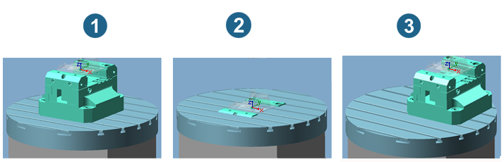
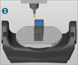
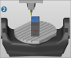
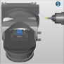
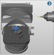

Clamping position dialog page
The Clamping position dialog page is only available via the Define frame dialog in the job list (dialog page → .
Use the clamping position to specify the zero point for the simulation. The table upper edge middle point of the machine model serves as the reference.
The Z axis of the clamping position must always be defined parallel to the Z axis of the NCS. If rotation is required, use the NCS transformation function in the machine configuration.
Examples:
-
The Clamping position option is not enabled. The model and clamp are placed in the middle of the table in the machine model used in the simulation.
-
The Clamping position option is enabled, no movement is defined.
Origin: X = 0, Y = 0, Z = 0.
The joblist NC system is placed in the middle of the table in the machine model used in the simulation.
-
The Clamping position option is enabled and a movement is defined.
Origin: X = -100, Y = -100, Z = -218.
The job list NC system is placed according to the defined movement against the table upper edge middle reference point of the machine model used in the simulation.
|  |
Note
If subsequent changes are made to the clamping position, update the jobs in the job list using the Update clamping position function (job list's shortcut menu). It is not necessary to recalculate the jobs.
VIRTUAL Machining Center: definition of the clamping position required
It is essential to define a clamping position when using a Virtual Machine.
-
The position of the part on the machine table is crucial for correct representation and testing in the simulation. The clamping position is also used for calculations such as the Best Fit function and milling with a rotation axis.
-
The position of the part on the machine table is defined by the clamping position.
-
The clamping position refers to the part coordinate system defined in the machine model (standard = center and top edge of machine table).
-
For vertical machine configurations, rotation is only permitted around Z, for horizontal machine configurations only around Y.
Tip
OPEN MIND generally recommends working with Z even with horizontal machines and using the NCS transformation, which enables machine-independent programming.
-
The clamping position is automatically updated before the VIRTUAL Machining Center or the SIMULATION Center starts.
Example 1:
Vertical kinematics and horizontal kinematics with NCS transformation: Rotation around Z (C) to the NCS is possible.
|
1. Without rotation: |
2. With rotation: |
|---|---|
|
Settings in the CAM system: → enabled Reference system = NCS, angle = A0, B0, C0 |
Settings in the CAM system: → enabled Reference system = NCS, angle = A0, B0, C45 Machine table rotated by 45° in home position |
|

|

|
Example 2:
Horizontal kinematics without NCS transformation: Rotation around Y (B) to the NCS is possible.
|
1. Without rotation: |
2. With rotation: |
|---|---|
|
Settings in the CAM system: → enabled Reference system = NCS, angle = A0, B0, C0 |
Settings in the CAM system: → enabled Reference system = NCS, angle = A0, B45, C0 Machine table rotated by 45° in home position |
|

|

|